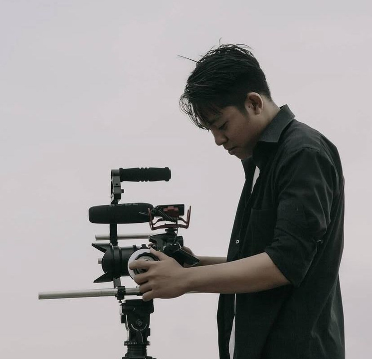
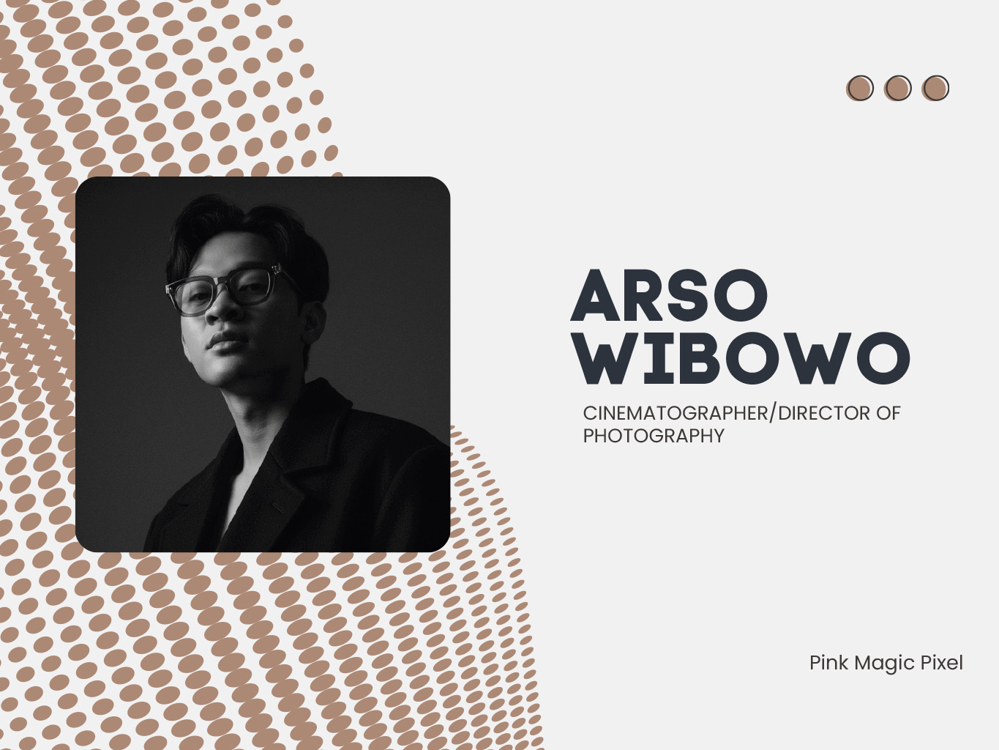
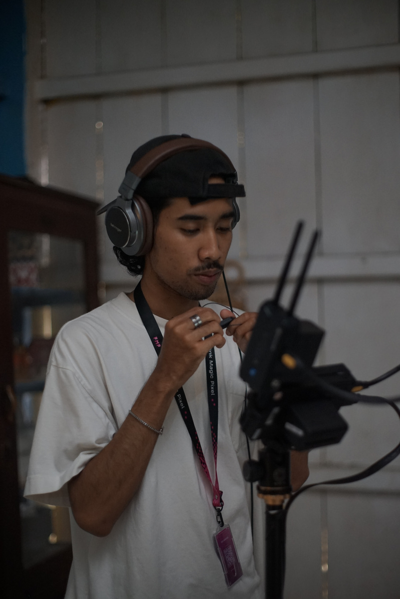
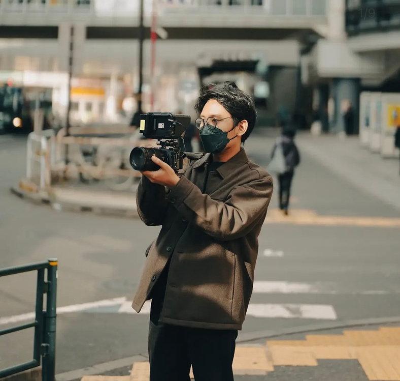
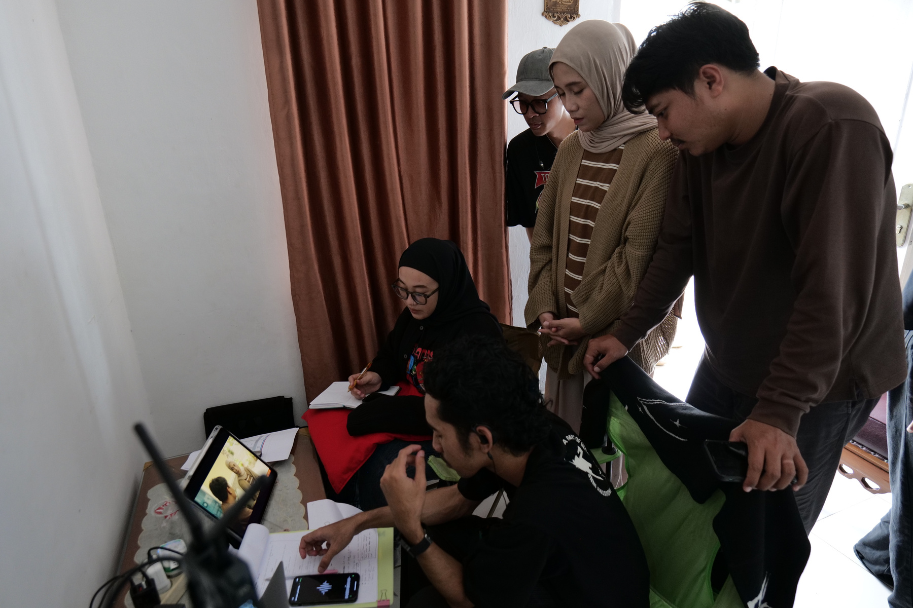
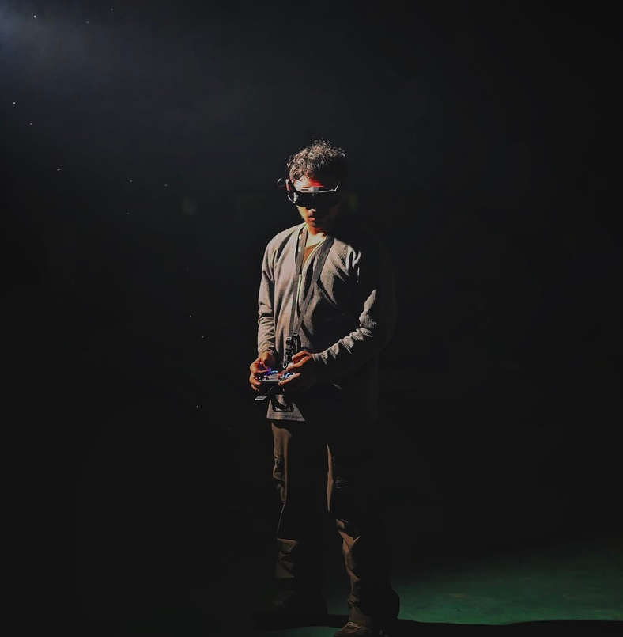
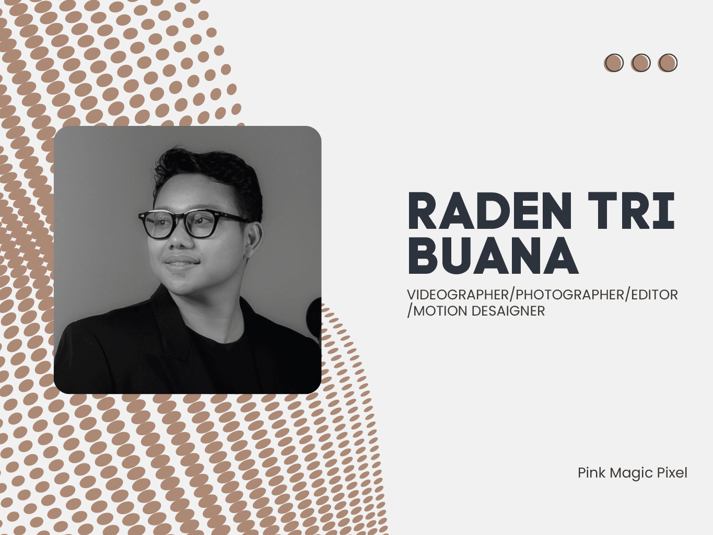
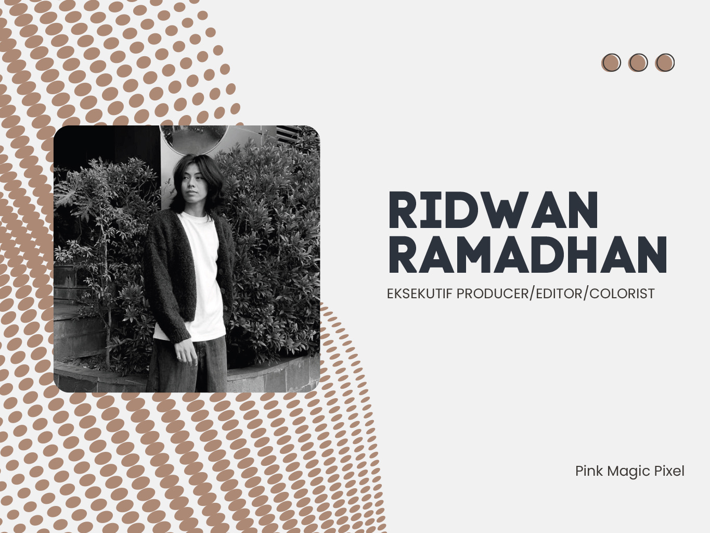
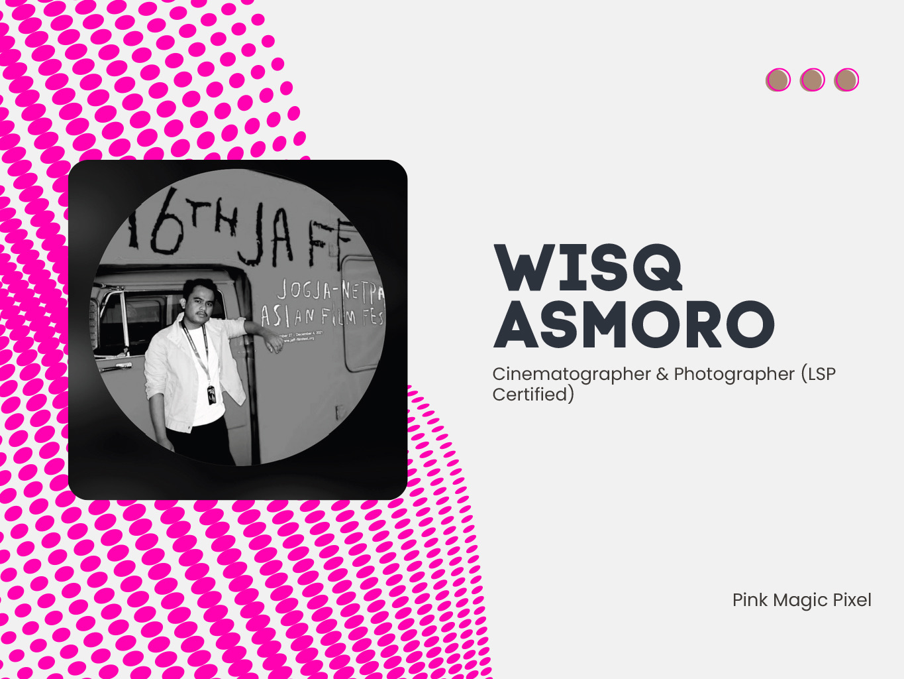

Behind the magic
Our Team
Tim yang membangun Pink Magic Pixel dari ide mentah jadi karya visual yang sinematik, rapi, dan punya karakter.
Team Snapshot
Kolaboratif, detail-driven, dan fokus ke storytelling.
Halaman ini disiapkan khusus untuk profil per orang. Saat detail Drive dibagikan, setiap kartu bisa diganti nama, jabatan, foto, dan bio tanpa mengubah layout.
Team Profiles
Core People
Profil berikut disusun dari folder Drive dan ditampilkan dengan foto asli, jabatan, ringkasan bio, serta highlight project utama masing-masing.

01Videographer / Photographer / Editor
Alvian Husin
Lebih dari satu dekade di industri kreatif. Memulai fotografi dan editing gambar sejak 2014, lalu mengembangkan videografi dan editing video sejak 2017 untuk menangani proyek visual berskala besar.
- Video Profile Lampung Barat (2023)
- Subroto Awards 2025 Pertamina Geotermal Energy
- The Guardian "Lampung Dive Club Mini Series" (2020)

02Cinematographer / Director of Photography
Arso Wibowo
Sejak 2018 merayakan setiap momen di dunia sinematografi. Fokus pada pengambilan gambar dan editing untuk menerjemahkan ide kreatif menjadi visual yang artistik dan efektif.
- BPKH Company Profile (2024)
- Beeme Short Movie (2023)
- Artotel Indonesia "Like a Local" Campaign (2026)

03Director
Eriko Ramadhan
Berfokus pada penyutradaraan dan penulisan karya audiovisual untuk company profile, campaign commercials, film, dan music video dengan pengalaman lebih dari 7 tahun.
- Nescafe x Raisa Digital Ads - Assistant to Director (2026)
- Batas Senja "Ketakutanku" Music Video (2026)
- Poltekkes Tanjung Karang Profile Video (2023)

04Production Team / Camera Department / Photographer
Fariz Gunsan
Production team, camera department team, dan photographer dengan 7 tahun pengalaman di industri kreatif, berfokus pada production, photography, camera assisting, lighting, dan visual storytelling.
- Poltekkes Kemenkes Tanjung Karang Company Profile (2024)
- Wahaha Seafood Company Profile (2025)
- Tubaba Art Festival Documentation (2024)

05Creative Producer
Ismi Anindita
Produser kreatif dengan pengalaman di industri film dan production house. Terbiasa mengelola workflow produksi end-to-end dari perencanaan, budgeting, scheduling, hingga quality control.
- Batas Senja "Ketakutanku" Music Video (2026)
- Wahaha Seafood Profile Video (2025)
- Seruit Buk Lin Profile Video (2025)

06FPV Pilot / Drone Aerial Pilot
Rachmat SB
Pilot FPV dan aerial drone dengan lebih dari 5 tahun pengalaman. Berfokus pada estetika dan penyampaian pesan visual melalui sudut pandang yang luas.
- PTBA Lampung CSR Video (2026)
- Indonesian Drift Series Competition (2026)
- HK Tol Bakter Company Profile (2024)

07Videographer / Photographer / Editor / Motion Designer
Raden Tri Buana
Sejak 2019 menekuni videography, editing video, dan motion design. Pada 2022 menambah skill photography dan terus mengembangkan disiplin kerja untuk berbagai proyek visual.
- Profile Putri Indonesia Lampung (2026)
- Tol Bakter Hutama Karya Company Profile (2024)
- Video Content MarketU (Agency USA) (2026)

08Executive Producer / Editor / Colorist
Ridwan Ramadhan
Dengan pengalaman lebih dari 9 tahun di industri kreatif, Ridwan menggeluti direction, art direction, graphic design, photography, color grading, editing, 3D, dan motion design untuk storytelling yang kuat.
- Artotel Indonesia - Like a Local Campaign (2025)
- Arga Bumi Indonesia Company Profile (2026)
- Inspektorat Jenderal Kementerian ESDM Company Profile (2024)

09Cinematographer & Photographer (LSP Certified)
Wisq Asmoro
Cinematographer dan photographer tersertifikasi LSP dengan pengalaman lebih dari 10 tahun di company profile, TV commercial, branded content, dan film, menggabungkan visual storytelling dan strategi komunikasi.
- Company Profile Production
- TV Commercial Production
- Branded Content & Film
Drive Content
Kiriman detail dari folder Drive siap masuk ke sini.
Kalau kamu kirim nama, jabatan, foto, dan bio dari tiap orang, saya bisa langsung ganti isi kartu ini supaya benar-benar sesuai profil asli tim.